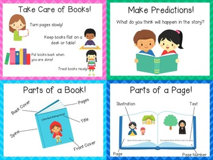
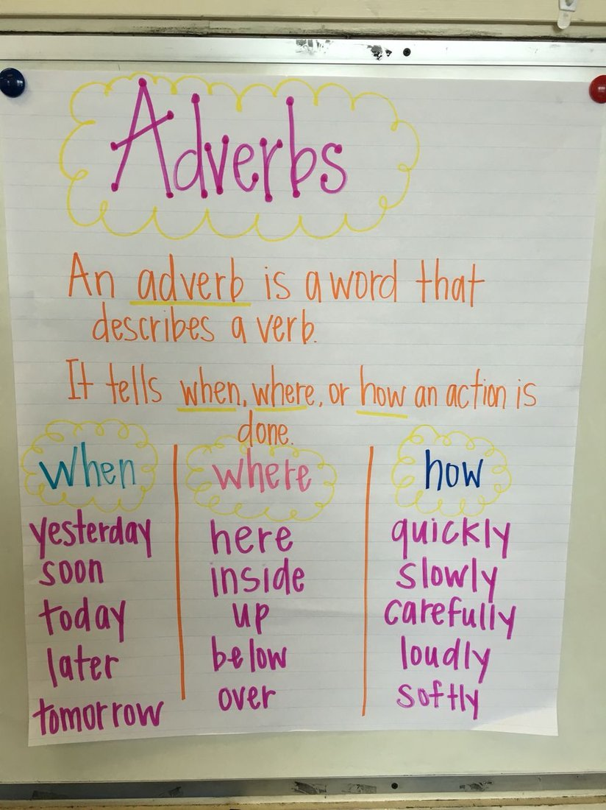
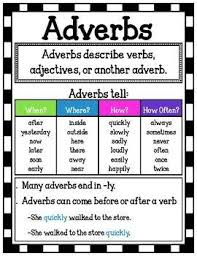
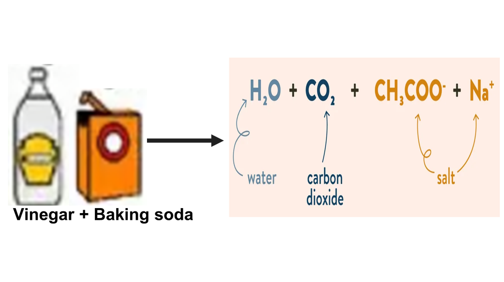

🧪 Week 5 of 35 — Unit 2: Changes in Matter
Unit 2: Changes in Matter | Dates: Sep 27 – Oct 1, 2026 | Week: 2 of 7 | Year week: 5 of 35 |
Class | Sunday | Monday | Tuesday | Wednesday | Thursday |
This week's updates / notes: | Sunday: Staff Development Day - NO STUDENTS (old plan). Last week for MAP and Benchmark Testing - ask Dave or Tina for help if needed. | ||||
Morning Meeting | Week #1 SEL Lesson - decide which day you prefer to do this lesson. THEME: KINDNESS 5A- Individual Activity to Whole Group Meeting 5B- One to One Enrichment 5C- Morning Worksheets | Week #1 SEL Lesson - decide which day you prefer to do this lesson. THEME: KINDNESS 5A- Individual Activity to Whole Group Meeting 5B- One to One Enrichment 5C- Morning Worksheets | Week #1 SEL Lesson - decide which day you prefer to do this lesson. THEME: KINDNESS 5A- Individual Activity to Whole Group Meeting 5B- One to One Enrichment 5C- Morning Worksheets | Week #1 SEL Lesson - decide which day you prefer to do this lesson. THEME: KINDNESS 5A- Individual Activity to Whole Group Meeting 5B- One to One Enrichment 5C- Morning Worksheets | |
SE Learning / PL Goal | PLG: Collaborator, Respectful, Communicator SEL - Kindness | PLG: Collaborator, Respectful, Communicator SEL - Kindness | PLG: Collaborator, Respectful, Communicator SEL - Kindness | PLG: Collaborator, Respectful, Communicator SEL - Kindness | |
Vocabulary & Spelling — Word of the Day (G5 + G3) Routine: give the definition first (no guessing) → students share where they might use it, similar/different words. Morphology, examples/non-examples, synonyms/antonyms & more on the vocabulary cards: Vocabulary Padlet (incl. Spelling: words Mon · test Thu) | G5: supplies — Materials, equipment, or provisions needed for a particular purpose or activity. G3: emerge — To come out from a hidden or enclosed space; to become visible. Unit: sequence — A particular order in which related events or things follow each other. | G5: technology — The application of scientific knowledge for practical purposes, especially through machines, devices, and systems. G3: glimpse — A momentary or partial view of something. Unit: passage — The process of moving from one place or stage to another; also a section of text. ——— Spelling — introduce Week 5 lists (practice all week). Low (Building Spelling Skills, List 5): add, ask, came, name, ride, bone, save, kite, cute, mine High (Building Spelling Skills, List 5): since, which, inch, string, picnic, shrimp, title, mind, wild, decide, why, skyscraper, buy, right, lightning, write, cypress, bicycle | G5: librarian — A person who is trained to work in a library and help people find information and books. G3: caution — Care taken to avoid danger or mistakes. Unit: complex — Consisting of many interconnected parts; not simple. | G5: interesting — Arousing curiosity or attention; holding one's interest. G3: excess — An amount that is more than necessary or allowed. Unit: gas — A state of matter that spreads out to fill any space, like air or steam. | G5: competition — An event or contest in which people try to win by being better, faster, or more skilled than others. G3: preserve — To maintain something in its original state; to keep safe from harm. Unit: commence — To begin or start something. |
READING | Guided Reading: Text types and book handling - fiction/non-fiction; model responsible care of a book; parts of a book; text features (intro).  Rotations: SeeSaw, IXL, Google Classroom KAMI WS folder, Boom Cards: Practice #1 · Practice #2 · Practice #3, RazKids, EPIC, Book Bag. | Guided Reading: Revise book handling and text types. Rotations: see the list from Sunday or the differentiation row below. | Guided Reading: Revise book handling and text types. Rotations: see the list from Sunday or the differentiation row below. | Guided Reading: Review / catch-up. Rotations: see the list from Sunday or the differentiation row below. | |
Standards | Reading Foundational Skills RF.5.3 (CC): Know and apply grade-level phonics and word analysis skills in decoding words. EE.RF.5.3: Use phonics and word analysis skills to decode words. RF.5.3a (CC): Use combined knowledge of letter-sound correspondences, syllabication patterns, and morphology (e.g., roots and affixes) to accurately read unfamiliar multisyllabic words in context and out of context. EE.RF.5.3a: Apply phonics and word analysis skills to decode words. RF.5.3b (CC): Read grade-appropriate irregularly spelled words. EE.RF.5.3b: Recognize common sight words. | ||||
Assessment | Informal assessment of book handling / text types. Ask students to name parts of a book; whether the text selected is fiction or nonfiction; some fiction text features; some nonfiction text features. | Informal assessment of book handling / text types. Ask students to name parts of a book; whether the text selected is fiction or nonfiction; some fiction text features; some nonfiction text features. | Informal assessment of book handling / text types. Ask students to name parts of a book; whether the text selected is fiction or nonfiction; some fiction text features; some nonfiction text features. | ||
Differentiation | Teacher should choose from the variety of above activities to best suit students' abilities. | Teacher should choose from the variety of above activities to best suit students' abilities. | Teacher should choose from the variety of above activities to best suit students' abilities. | Teacher should choose from the variety of above activities to best suit students' abilities. | |
GRAMMAR (Sun & Tue) WRITING (Mon & Wed) Thu = catch-up IXL this week: Low: Select the best preposition to complete the sentence (G1) High: Identify prepositions (G3) Stretch: Use coordinating conjunctions (G4) · Use the correct pair of correlative conjunctions (G5) | Grammar (Sun) — Prepositions OBJ: Identify prepositions showing location, time, and relationship Packets — Low (K-1): K: L2.4 Prepositions, G1: L1.5 Prepositions · Mid (2-3): G2: Review — Nouns/Pronouns/Verbs (teacher extends to prepositions), G3: Review — Adj/Adv/Conj (teacher extends to prepositions) · High (4-6): G4: L1.9 Prepositions, G5: L1.18 Prepositions, G6: L1.20 Prepositions, G6: L1.21 Prepositional Phrases Inside the container, above the surface, below the boiling point. Grammar anchor charts / resources (from the 2025-26 plan): High: Watch Brainpopjr on Subject Verbs Agree   | Writing — Command verbs + time connectives Review the cereal model; mini-lesson on imperative verbs (cut, mix, pour) and time connectives (First, Next, Then, After that, Finally); add them to the model and build a shared word bank. Grammar link: verbs — the imperative form. TWR: unscramble the step — scrambled word cards rebuilt as complete command sentences with the time connective in front (transitions taught AS a sentence activity). Resources: BrainPOP Jr: Verbs (Padlet) — How to Trap a Dragon — mentor (Padlet) — word banks: command verbs, time connectives IXL: Identify time-order words (G2) — Use time-order words (G2) — Action verbs (G3) — Stretch: Time-order words (G4) — Past, present, or future? (G5) | Grammar (Tue) — Conjunctions OBJ: Identify coordinating conjunctions and use them to connect sentences Packets — Low (K-1): K: L2.6 Sentences (and/but/or oral introduction), G1: L1.10 Combining Sentences · Mid (2-3): G2: Review — Adj/Adv (teacher extends to conjunctions), G3: L1.8 Conjunctions · High (4-6): G4: L1.10 Conjunctions, G5: L1.16 Conjunctions, G6: L1.18 Conjunctions Ice melts AND becomes water. | Writing — Write a mug-recipe how-to from a shared demo Do a simple mug-recipe demo (eggs, pizza, or brownie — class votes the week before). Students rehearse the steps orally, then write a how-to with numbered steps, command verbs, and time connectives. TWR: key-word plan first — dot-jot each step in 2-3 words ("crack egg", "stir mix"), rehearse aloud from the jots, then write full numbered steps. Differentiation: Low/Med sentence-frame organizer ("First, ___."); High adds a Materials list with amounts and a tip. Resources: Procedural Texts PPT (Padlet) — word banks: command verbs, time connectives | Catch-up day — reteach or extend this week's grammar and writing; finish unfinished drafts; assign this week's IXL practice (links in the left column: Low = reteach, High = consolidate, Stretch = extension). |
MATH Pacing W04 · B2 Addition, subtraction, multiplication and division W03–W08 | |||||
Differentiation | Each lesson includes partner practice, common misperceptions, independent practice, and challenge questions for differentiation. | Each lesson includes partner practice, common misperceptions, independent practice, and challenge questions for differentiation. | Each lesson includes partner practice, common misperceptions, independent practice, and challenge questions for differentiation. | Each lesson includes partner practice, common misperceptions, independent practice, and challenge questions for differentiation. | |
EXPLORER 3-day plan (Mon–Wed) Physical & Chemical Changes IXL this week: Low: Identify Physical & Chemical Changes (Gr 2) · High: Compare Physical & Chemical Changes (Gr 4) Stretch: Compare Physical & Chemical Changes (Gr 5) · Identify Reactants and Products (Gr 5) | Review / catch-up — revisit last week's Explorer learning; finish unfinished investigations or SeeSaw posts; preview this week's topic. | Mon · Review + Model: States of Matter 1. Review — Revisit Monday’s classroom sort and key vocabulary: solid, liquid, gas, particle. 2. Video input — Watch BrainPOP Jr: Solids, Liquids, and Gases in short sections. Pause to check examples of each state. 3. Vocabulary movement game — Brainstorm movements for each state: solid = stand completely still; liquid = move slowly and “flow”; gas = move quickly in every direction without getting close to others. Teacher calls out a state and students model it; extend by letting students lead. 4. Guided sort — Complete the SeeSaw Lesson on Matter together, asking students to justify each choice using properties. 5. Extend — Use Epic: ‘Many Kinds of Matter’ as an additional reading/resource to reinforce examples and vocabulary — open in Epic. Objective: Model each state of matter through movement and connect it to particle behaviour. Assessment: Show the movement for a state of matter and explain what the particles are doing. Differentiation: Model one state with support / model two states with some support / model and explain particle movement independently. | Tue · Start Experiment + Build Understanding: Physical Changes 1. Hook — Watch ‘Physical & Chemical Changes’ (~4 min). Vocab: physical change, melt, reversible, temperature. 2. Teach — This week we transform materials; today we look at physical changes. 3. Melting race — Compare ice, chocolate and butter (scale, 3 beakers, timer, electric skillet). Predict which melts fastest; place each in a beaker on the skillet; note the temperature (water boils at 100°C); measure the melt time; graph the results. 4. Discuss — Are the changes permanent? How could you turn each back into a solid? 5. Quick check — Show one change; is it physical or chemical, and how do you know? Objective: Say whether a change is physical or chemical. Assessment: What change has happened? Differentiation: Say the words physical / chemical · identify some of the time · correctly identify independently. Resources — Examples of Physical & Chemical Changes · Is it a Physical or Chemical Change? (book) · More examples (Padlet) · Seesaw: Physical & Chemical Changes in Matter · IXL: Identify physical and chemical changes Explorer photos / resources (from last year's plans): To start off, have a look at the findings from the previous day - go over the steps and link the carbonated water to the baking soda, talking about the gas that was formed in the chemical reaction and the gas put in carbonated drinks..  | Wed · Observe + Explain: Physical vs Chemical Changes 1. Review — Sort events physical vs. chemical using the matter games; quick check. 2. Watch — Watch Chemical Changes: Crash Course Kids #19.2; discuss what tells us a chemical change has happened. 3. Experiment — Chemical change: baking soda + vinegar makes a new gas. Record one physical and one chemical change on SeeSaw (Three States of Matter · Chemical or Physical – High). Objective: State what makes up a chemical change. Assessment: What things let us know a chemical change has taken place? Differentiation: Name 1 / 2 / more than 2 indicators. 4. Discuss — Once the gas from the baking soda + vinegar reaction escapes, can we get it back? This change is irreversible — unlike Tuesday’s melting, which was reversible. (Thursday’s investigation will dig deeper into gases and carbonated liquids.) 5. Literacy link (writing) — Revisit the ‘cooked in a mug’ activity; write about how the ingredients transformed. Objective: Can identify changes that are reversible or irreversible. Assessment: What change has happened? Is it reversible or irreversible? Differentiation: Can say the words / identify some of the time / correctly identify reversible and irreversible changes. Resources — Ice, Butter, Chocolate (Padlet) · States of Matter Millionaire Game | Review / catch-up — consolidate Mon–Wed learning; complete recordings/reflections; reteach or extend as needed. |
Closing Circle (SELG) | Study for Spelling Test. Complete Homework. Take 8 photos to be used in a personal narrative you will write next week. Save them to your camera roll. | Study for Spelling Test. Complete Homework. Reminder: Take 8 photos to be used in a personal narrative you will write next week. Save them to your camera roll. | Study for Spelling Test. Complete Homework. Reminder: Take 8 photos to be used in a personal narrative you will write next week. Save them to your camera roll. | Reminder: Take 8 photos to be used in a personal narrative you will write next week. Save them to your camera roll. | |